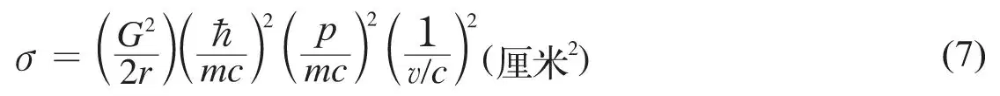
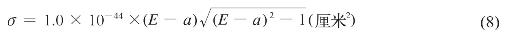
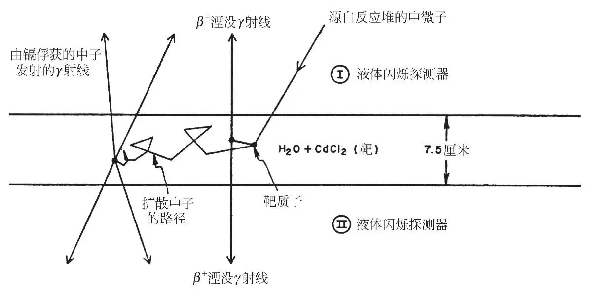
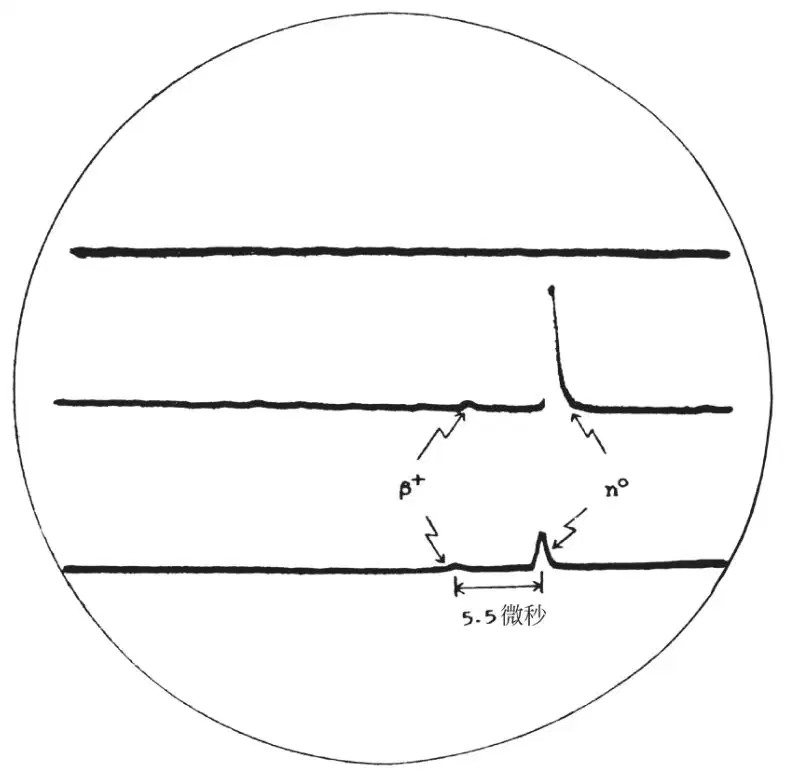
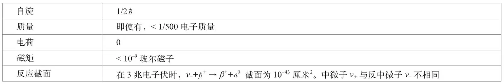

英文
英文莱因斯，考恩
编者按
20世纪30年代初期，罗马的恩里科·费米和苏黎世的沃尔夫冈·泡利根据放射性β衰变现象得到的研究结果，推测出被称为中微子的亚原子粒子的存在，他们认为该粒子质量极小且不带电荷。洛斯阿拉莫斯科学实验室的弗雷德里克·莱因斯和克莱德·考恩认为，核反应堆是强大的中微子源，本文中他们描述了一个证明中微子存在的实验，实验中质子（由一大箱水提供）与中微子相互作用，使中微子转换为光子，并用光闪烁体阵列对光子进行测量。如今用光闪烁体检测这类核反应中产生的中微子已成为标准方法。然而，直到20世纪80年代人们才逐渐清楚存在三种不同类型的中微子以及莱因斯和考恩研究的那些中微子也可能具有微小的质量。 英文
自然科学的每项新发现都扩展了我们的知识，加深了我们对物质世界的了解；但是与它们所解决的问题相比，这些进展有时会引出一些新的甚至更基本的问题。放射性“β衰变”过程的发现和研究就是这样一个例子。在这个过程中，原子核自发地发射一个负电子或正电子，这样它就变成了一个与母元素质量数相同但相差一个电子电荷的不同元素。正如所预料的那样，对自然界这一有趣的神奇过程的深入研究阐明了关于原子核的一些问题。然而随即出现的一个新问题是：人们发现伴随着β衰变，衰变核[1]中有无法解释的能量损失；并且人们无法通过改善发生衰变的装置来捕获这些损失的能量[2]。一种可能的解释是，守恒定律（现代科学的整个结构建立在这个定律之上）应用到亚原子尺度时不再成立。沃尔夫冈·泡利于1933年提出另一种新奇的但能继续遵守守恒定律的解释，他假设存在一类新的基本粒子[3]对应于损失的核能量。核在发射电子的同时发射出这类粒子，该粒子不带电荷，但是带有丢失的那部分能量和动量，即实验装置未检测到的那部分能量和动量。 英文
恩里科·费米在构建他的核β衰变定量理论[4]时，采用了这个如幽灵般的粒子的概念（他称之为“中微子”）。众所周知，这个理论作了微小修正后应用到核问题中已经取得了越来越多的成功，并成为支持泡利观点的最令人信服的论据之一。此外，还设计了许多别的实验测试，这些测试巩固了中微子假设，并提供了中微子性质的信息。这种粒子具有带走能量和动量而不被检测到的本领，这表明之前提出的解释可能是正确的。也正是这一特性限制了这些测试只能测量衰变过程本身可观测的细节：与发射的电子和反冲子核[5]相关的能谱、动量矢量和能态。例如，通过仔细测量接近端点的氚衰变的β能谱[6]，得到中微子静止质量的上限为电子的静止质量的1/500，通常可以假定中微子的静止质量恒等于零。 英文
然而预测中微子确定的静止质量并无理论上的根据，但考虑到中微子可能存在的虚态（中微子在这种虚态中可以分裂为其他粒子[7]），可以预测中微子具有很小且确定的磁矩，大小可能为10–10玻尔磁子。通过计算中微子从太阳[8]到地球所传送的最大可转让热量，得到磁矩的上限可取为2×10–9电子玻尔磁子。最近我们在美国原子能委员会萨凡纳河工厂的裂变反应堆附近使用大的闪烁探测器，得到改进上限值为10–9电子玻尔磁子。在370加仑的液体闪烁器内，观测到了0.1兆电子伏~0.3兆电子伏能量区间内单脉冲的计数率，通过与中微子的磁矩相互作用，由反应堆功率变化引起的所有变化都被归因于液体中可能的电子反冲。我们希望通过降低探测器中γ射线和中子的背景，可以进一步改进这个上限。 英文
泡利–费米理论不仅要求中微子从β衰变核带走能量和线性动量，而且还要求带走角动量，即“自旋”。最简单的β衰变过程就是自由中子的衰变[9]，可用下式说明：
n0→p++ β–+ v_
（1）
因中子、质子和β粒子都带有半整数的自旋，为了式（1）中的角动量平衡（式中三个产物粒子中的任何两个必须自旋反平行），必须赋予中微子一个量子数为1/2的自旋。因为式（1）中四个粒子全都是费米子，所以应遵从自旋为1/2的粒子的狄拉克相对论波动方程。每个粒子都可能存在相应的反粒子，但只有反电子（或称为正电子）和反质子已被确认。式（1）的中微子相应的反粒子可以通过把这几项重排而获得：
p+→n0 + β++ v+
（2）
这个过程是在丰质子放射性核素的正电子衰变中观测到的，其中质子和中子都是核子的组成成分。进一步的重排引起了如下反应：
β– + p+→n0 +v+
（3）
与式（2）类似，这是一个核内质子从原子内壳层捕获电子的描述。这导致了一个问题，即式（2）和式（3）中的中微子v+与式（1）中的中微子v–是否相同。目前二者的质量和磁矩都还没有确定的测量值，我们更倾向于认为它们实际上是相同的。费米子代数上的守恒法则表示，费米子是通过粒子–反粒子对成对产生或消失的，由于式（1）的v–是伴随一个负电子发射的，因此应被称为“反中微子”。尽管中微子v+和反中微子v–是否相同这个问题在单一的β衰变中并无重要观测结果，但却易于通过测量某些屏蔽同位素的双β衰变的衰变常数来检验。梅耶夫人[10]在理论上对这个过程做了研究，认为中微子和反中微子并不相同，而弗里[11]的研究则认为马约拉纳[12]的观点是正确的，即两类中微子是相同的。以钕-150的可能衰变表征双β衰变：
150Nd→150Sm + 2β– + 2v–（狄拉克–梅耶夫人）
（4a）
150Nd→150Sm + 2β–（马约拉纳–弗里）
（4b）
如果中微子和反中微子是相同的，则一个中微子的虚发射和它立即被原子核重新吸收等效于两个中微子的实发射，可用式（4b）来表示。如果中微子和反中微子并不相同，便不可能存在这种抵消。对于式（4）所表达过程的半衰期，普里马科夫[13]和科诺平斯基[14]在两种情况下给出的结果完全不同，其中式（4a）的量级为1019年，式（4b）的量级为1015年，衰变可用的能量为5.4兆电子伏。此外，对于马约拉纳–弗里（式4b）的情况，可以预期得到两个β粒子总能量的线谱。 英文
一些屏蔽同位素表明，与式（4b）相一致的衰变周期并不存在[15]。卡尔克施泰因和利比以及法尔曼和施瓦策先后在锡-124中发现了这一点，阿沙洛姆在钙-48中以及我们和我们的同事在铷-150中也发现了这一点。在钕-150的实验中，马约拉纳–弗里衰变的平均寿命下限被设置为4×1018年（对应于背景中的一倍标准偏差）。这个极限可以与基于合理假设的值1.3×1015年以及相同中微子情况下计算（用最严格的假设）的值6×1017年进行比较。这个结论依旧认为中微子和反中微子是不同的粒子，只是至今尚未检测到它们之间的“差异”。戴维斯[16]最近报道的实验负结果进一步支持了这个结论，他采用以下反应：
37Cl + v+→37A +β–
（5）
将1,000加仑的四氯化碳放置在大反应堆的附近作为氯靶，然后检验液体中是否存在氩-37。富含中子的裂变碎片应仅发射反中微子v–。 英文
根据β衰变过程各方面聚集的实验证据（除中微子外）的审慎推理可以支持存在中微子这一结论，而是否真实存在只能通过对中微子进行直接观测才能证明。如果中微子是一个真实的粒子，且携带β衰变位置处丢失的能量和动量，那么若在另一地点发现这些丢失的能量和动量便可以证明它真实存在。因此，如果式（1）中的负β衰变能与另一地点的下列逆反应（观测发现该逆反应以预期的速率发生）相关：
v– + p+→β++ n0
（6）
那么这个问题就解决了。已知自由中子β衰变的衰变常数和电子能谱，将细致平衡原理应用于式（1），可以得到这个反应截面的表达式：

式中截面σ的单位为厘米2；G2（值为44×10–24）是基于中子衰变[9]的无量纲集总β耦合常数；p、m和v分别是发射的正电子的动量、质量和速度，c是光速，2πћ是普朗克常数，所有量都采用厘米·克·秒制单位。对于入射到自由质子上能量为3兆电子伏的中微子而言，这个截面是10–43厘米2。式（6）中截面的精确解是中微子能量的函数：

式中a+1（值为3.53）是反应的阈值，E是中微子能量，两者都以mec2为单位。束缚在核内的质子的阈值会随着靶与子核之间的能量差的增加而增高。有趣的是，我们注意到由式（8）可知，低能（E<a+1）的中微子对物质的穿透力无限大，仅有几兆电子伏的中微子的穿透力都很大，测得的吸收平均自由程可与宇宙的半径相比。 英文
式（6）可以应用到如下实验：大量的氢原子作为强中微子流的靶，并用一个能够记录同时产生的正电子和中子的探测器进行监测。多兆瓦反应堆中的裂变碎片的高β衰变速率的可用性，以及通过使用液体闪烁器而带来的检测技术的改进，最终使得这类直接实验得以实施。对来自大反应堆的中微子流的估计表明，反应堆附近放置的50升水中每小时有几个质子发生反应（6）。问题是如何排除反应堆中的中子和γ射线、天然放射性和宇宙射线的背景的影响，合理有效地观测这些结果。1953年，我们[17]在原子能委员会的汉福特场地进行的实验中，对这方面进行了尝试。我们用300升的液体闪烁器（内含甲苯和微量三联苯的混合物以及溶解了丙酸镉的α–挥发油–苯基）提供靶质子。观测到脉冲对的延迟速率为每分钟0.4±0.2个计数（每对的第一个可归为正电子，第二个可归为在镉中俘获的中子），该观测速率与预测速率相符，而且前面提到的背景影响也大大减小。然而，信号与整个背景的比仍然很低（1/20），因而进一步测试还不现实，结果也只是暂时性的。在汉福特经验的基础上，我们认为可以以一种确定的方式解决检测问题，综合考虑了进一步减小背景因素的目的之后，设计了第二个实验[18]，该实验可以独立检验式（6）中的每一项。 英文
图1是实验采用的检测方案的示意图。图示事件的发生顺序如下：从反应堆的裂变碎片中衰变得到的中微子使靶质子转变为中子，同时发射出一个正电子。正电子被靶水中的电子俘获，并发射两束0.51兆电子伏的湮没γ射线，被计数器I和II同时检测到。中子在几微秒内减速和扩散，最终被镉俘获并发射一些γ射线（总能量为9兆电子伏），这些射线再次被计数器I和II检测到。因此，我们得到一个瞬间符合，几微秒后，又得到第二个瞬间符合，从而形成了一个非常独特的事件序列。 英文

图1．中微子探测器示意图 英文
根据预测的每小时每升水中的事件数以及我们希望得到的探测效率来设置实验装置的总尺寸。设计几何形状和探测效率的一个主要影响因素是靶水本身对正电子湮灭辐射的吸收。实验和计算表明，水的最佳厚度为7.5厘米。由于整个效率需要约200升的靶以保证每小时产生几个计数，因此需要两个尺寸为1.9米×1.3米×0.07米的靶箱。液体闪烁探测器的深度（61厘米）可以保证高效率地吸收镉俘获的γ射线，并以最小的损耗传输γ射线产生的光到探测器终端。用110个5英寸的杜蒙特光电倍增管从每个探测箱的端部观察闪烁液体（三乙基苯、三联苯和POPOP波长变换剂），其中光电倍增管的数量主要取决于闪烁体中发射光子的数量。完整的检测器是一个“总汇三明治”式的组合，即在三个探测箱之间放置两个靶箱，从而构成了两个基本独立但共同使用中心探测箱的三件套。整个探测器装在一个铅–石蜡保护箱内，并放置在深层地下，位于美国原子能委员会的萨凡纳河工厂的一个生产堆附近。检测信号通过同轴电缆传输到位于反应堆建筑外的电子仪器拖车上。通过脉冲–高度以及时间符合电路来分析脉冲，当接收到脉冲时，用照相方法将脉冲记录为三踪示波器上的径迹。图2是三件套底部一个事件的记录结果。用靶箱中的钚–铍中子源和溶解的铜-64正电子源校准整个系统；用标准化的脉冲发生器检测探测器以外的电子设备的稳定性。还通过探测器对宇宙射线中μ介子的响应检验它自身的性能。在运行1,371小时后（包括反应堆功率增长的时间和反应堆功率下降的时间），观测结果[19]如下：

图2．一次特征记录。显示的三条示波器径迹分制对应三个探测箱。记录的这个事件发生在底部的三件套。在符合中首先见到的是每个探测箱中的“正电子”湮没γ射线脉冲，5.5微秒后，出现较大的“中子”脉冲。在这种情况下，选用能测量中子脉冲的放大倍数。并行运行的第二台示波器的放大倍数更大，用以测量正电子脉冲。 英文
（1）取决于反应堆功率的信号，为2.88±0.22个计数/小时，是用超过20/1的信号–反应堆偶然背景比测量的，与预计[20]的截面（6×10–44厘米2）相一致。信号–反应堆的独立背景比为3/1。 英文
（2）用重水稀释靶箱内的轻水溶液从而使质子密度为正常情况下的一半，这样可使反应堆信号的速率下降到其以前的一半。而用钚–铍源测量的中子检测效率不变。 英文
（3）通过一些实验表明，这对脉冲中的第一个脉冲是正电子湮没辐射形成的：其光谱与水中溶解的铜-64的正电子湮没辐射谱一致，并以预期的方式被插放在靶箱和探测器间的薄铅板吸收。 英文
（4）这对脉冲中的第二个脉冲是由与正电子同时产生的中子经延迟后在镉中俘获产生的，这可由其俘获时间分布与中子源的计算和观测结果相比较来确定。第二个脉冲的谱与镉俘获γ射线谱一致，移除镉将导致反应堆的信号也随之消失。 英文
（5）对于与反应堆有关的辐射，例如中子和γ射线，有两类实验可将它们排除在信号来源之外。在第一类实验中，在检测器保护箱外放置一个强镅–铍中子源，我们发现它不仅在产生可接收的延迟符合方面效率很低，而且它产生的第一个脉冲谱并不像要求的信号那样随着能量的增高单调下降。在第二类实验中，一个附加的保护箱为反应堆的中子和γ射线提供了一个至少为10的衰减因子，观测发现除了影响到式（1）统计涨落外，它并不引起反应堆的信号变化。 英文
因此，对式（6）的逐项检测结果表明，在高能裂变反应堆附近能观测到自由中微子。 英文
来自反应堆的高通量中微子的可用性带来了许多有趣的可能性。其中一个源于前面提到的用重水稀释质子靶。这个试验是成立的，因为中微子与氘核相互作用的阈能比式（6）的阈能高2.2兆电子伏，这个值正是氘核的结合能，因此截面小一个量级；如果考虑到其他因素，其值可能还会进一步减小。然而中微子–氘的相互作用本身就很有意义，得到下面两个反应：
v– + D→β++ n + n
（8a）
v– + D→β++ n2
（8b）
式中n2是双中子[21]的束缚态，不过目前尚未观测到。如果观测到反应（8a）发生，则精确测量其反应速率与式（6）反应速率之比，并应用裂变中微子谱的知识，将能直接测定在β衰变中费米常数与伽莫夫–特勒耦合常数的比值。这是因为：式（6）中的耦合常数包含上述两个常数，而式（8a）仅包含伽莫夫–特勒常数。另一方面，如果观测到式（8b）表示的反应，则不仅这些考虑成立，而且双中子束缚态（根据泡利不相容原理这个束缚态必然是一个单重态，即反平行自旋）的存在将直接影响到核力是否依赖于电荷这一问题。这是因为已经知道（n,p）体系的单重态是非束缚的。由于式（8a）中由裂变碎片中的中微子产生的两个中子仅具有几千伏的能量，而且事件结束时它们处于自旋反平行态，因此条件似乎对双中子的形成十分有利，即使结合能仅几十千伏。 英文
自从泡利提出中微子假设并且在费米的核β衰变理论上取得成功后，这种粒子已经被认为在观测到的许多不同介子[22]的衰变中发挥着类似的作用。然而存在一个问题，即这些类中微子粒子与核子衰变的中微子是否是同一种粒子。我们注意到在核β衰变中，最初的核和最终的核均与原子核有明显的强相互作用。而在（π,μ）衰变中并不是这种情况，其中“中微子”的发射使重粒子与核的相互作用从强变弱。此外，尽管核β衰变矩阵元与那些（μ,β）衰变矩阵元明显相等，但是后者的最初产物和最终产物与核只有很弱的相互作用。 英文
人们曾认为，中微子是最小的物质实体；最大的是宇宙。试图用一事物来理解另一事物，就是希望横跨自然定律所有表现形式的尺度。然而，尽管现在我们对这些极限的知识还是模糊不清，但仍在试图通过想象解决这些问题。如果核反应在我们假定的宇宙的剧烈的诞生过程中发挥作用，那么有多少比重的初始能量快速地流入不可逆的中微子场中？这些中微子几乎从时间一开始就不与任何物质接触，那么它们会被宇宙普通的引力场捕获吗？如果答案是肯定的，那么它们现在的密度有多大，它们的能谱和角度分布又如何？中微子和反中微子以相等数量存在吗？如果中微子的静止质量为零，那么在讨论其引力势时，它是作为“物质”粒子还是电磁辐射来考虑？所有核能产生过程的宇宙最终产物的探测及其特性的测量，对当今的物理学无疑是一个重大的挑战。 英文
中微子的已知性质概括如下：
中微子的性质

我们的工作以及本文中涉及的我们同事的工作得到美国原子能委员会的支持。 英文
（沈乃澂 翻译；尚仁成 审稿）